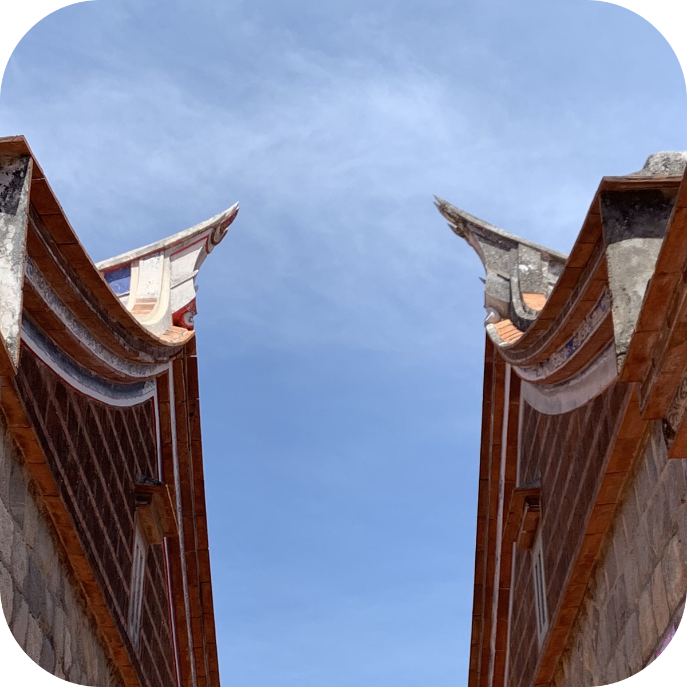

雷斯是烈嶼台語的念法直接變成中文，
西是因為位在島嶼的西口村西方這個聚落。
且英文唸起來很像Let' s see，
即為「讓我想想」的俗諺。來這個地方遠離塵囂，
給你一個安靜的空間放空或想想跟自己有關的事情，
不管是決定未來或是懷念過去。
但村里緩慢的生活步調、隨處可見的牛、傍晚的蟲鳴鳥叫、
稀疏的海浪聲跟依循古法的閩式建築，可能更容易讓你懷念過去。
馬背
馬背是指房屋正脊兩端不起翹，使垂脊由前坡順勢滑向後坡，形成供起如馬背般的山牆。馬背還有五行細分，本民宿採用金型馬背，有帶財來厝之涵義。金門國家公園管理處便以此為設計。
燕尾
兩側翹起、尾端分叉為二的燕尾，最初是代表主人中舉的官宅。金門縣徽便以此為設計。

雲紋
用來裝飾馬背及燕尾下方的雕刻裝飾品，多為蝙蝠（取福之意）、神獸、如意、祥雲等圖樣，各有不同的寓意。
西方是金門烈嶼的歷史街區，曾因撤軍而衰退，但近年來，隨著年輕人投入造街活動，老街逐漸恢復人氣。當地商店如炸雞店、冰店、茶飲店等吸引遊客，金門縣政府也在街道上增添軍事裝飾，重現當年金門十萬大軍的熱鬧場景。街道兩側的軍事標語、戰地紀念與軍事遺跡，讓遊客更了解當年的戰地生活，並成為熱門的打卡地點。
－－－圖為西方玄天上帝廟